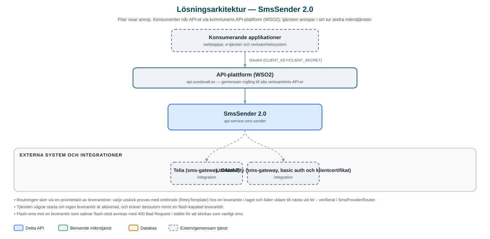

SmsSender
Skickar sms till invånare och medarbetare via externa sms-gateways, med automatisk växling mellan leverantörer om en av dem inte kan leverera.
Om API:et
SmsSender är kommunens gemensamma utskickstjänst för sms. Applikationer som behöver nå mottagare via sms anropar detta API i stället för att själva teckna avtal och integrera mot sms-leverantörer. Tjänsten används i praktiken mest indirekt, via Messaging-API:et som routar sms-utskick hit.
Tjänsten har stöd för två externa sms-gateways – Telia och LinkMobility – och varje leverantör konfigureras med aktivering, prioritet och eventuell flash-sms-kapacitet. Vid utskick provas leverantörerna i prioritetsordning med inbyggda omförsök; misslyckas den första provas nästa automatiskt, vilket ger redundans om en leverantör har driftstörningar.
Utöver vanliga sms kan tjänsten skicka flash-sms (meddelanden som visas direkt på mottagarens skärm), förutsatt att en flash-kapabel leverantör är konfigurerad. Tjänsten är helt tillståndslös och lagrar ingenting om skickade meddelanden.
Det här gör API:et
- Skicka sms – Ett enkelt anrop med avsändarnamn, mottagarnummer och meddelandetext skickar ett sms via den högst prioriterade leverantören.
- Flash-sms – Separat resurs för flash-sms som visas direkt på mottagarens skärm; kräver att en flash-kapabel leverantör är aktiverad.
- Automatisk leverantörsväxling – Leverantörer ordnas i en prioritetskö – misslyckas utskicket hos en leverantör efter omförsök provas nästa i kön.
- Konfigurerbara leverantörer – Varje sms-gateway kan aktiveras/inaktiveras och ges prioritet och flash-kapacitet via konfiguration, utan kodändringar.
- Hälsokontroll av klientcertifikat – En schemalagd kontroll övervakar LinkMobility-integrationens certifikat och sätter tjänstens hälsostatus till RESTRICTED vid problem.
API-dokumentation
API:ets samtliga resurser, parametrar och datamodeller finns beskrivna i en OpenAPI-specifikation som är hämtad ur källkodsförrådet. Den kan utforskas interaktivt i Swagger UI eller laddas ner som YAML.
Teknisk dokumentation
Nedan beskrivs hur tjänsten är uppbyggd, vilka andra tjänster den anropar och vad som krävs för att driftsätta den. Informationen är härledd ur källkoden och dess konfiguration på GitHub.
Arkitektur

API:et är en mikrotjänst (Java 25, Spring Boot via kommunens gemensamma tjänsteplattform dept44 (8.0.8), byggd med Maven). Konsumenter når tjänsten via kommunens gemensamma API-plattform (WSO2) på api.sundsvall.se – tjänsten anropas aldrig direkt. Övriga integrationer som förekommer i koden: Telia (sms-gateway, OAuth2), LinkMobility (sms-gateway, basic auth och klientcertifikat).
Teknikstack
- Språk: Java 25
- Ramverk: Spring Boot via kommunens gemensamma tjänsteplattform dept44 (8.0.8), byggd med Maven
- Övrigt: Spring Retry för omförsök, Feign-klienter via dept44, Lombok
Beroenden till andra mikrotjänster
Inga anrop till andra mikrotjänster hittades i källkodens konfiguration.
Konfiguration och driftsättning
- Per leverantör (telia/linkmobility): base-url, enabled, priority och flash-capable
- Telia autentiseras med OAuth2 (token-url, client-id, client-secret)
- LinkMobility autentiseras med basic auth (username/password) samt platform-id och platform-partner-id
- Schemalagd certifikatkontroll för LinkMobility styrs med cron-uttryck (avstängd som standard)
- Anrop görs per kommun – municipalityId ingår i API-vägen
Noterbart ur källkoden
- Routningen sker via en prioritetskö av leverantörer: varje utskick provas med omförsök (RetryTemplate) hos en leverantör i taget och faller vidare till nästa vid fel – verifierat i SmsProviderRouter.
- Tjänsten vägrar starta om ingen leverantör är aktiverad, och kräver dessutom minst en flash-kapabel leverantör.
- Flash-sms mot en leverantör som saknar flash-stöd avvisas med 400 Bad Request i stället för att skickas som vanligt sms.
- Tjänsten saknar databas och interna mikrotjänstberoenden – katalogen under src/main/resources/integrations innehåller endast Telias klientspec (extern leverantör).
Källkod
Källkoden är öppen och finns hos Sundsvalls kommun på GitHub. I källkodsförrådet finns även instruktioner för att klona, konfigurera och starta tjänsten i egen miljö.